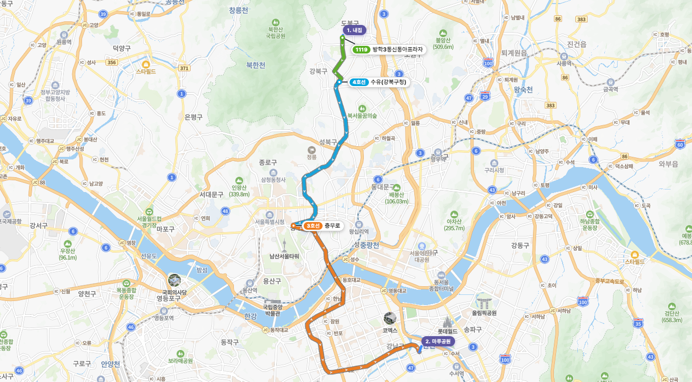
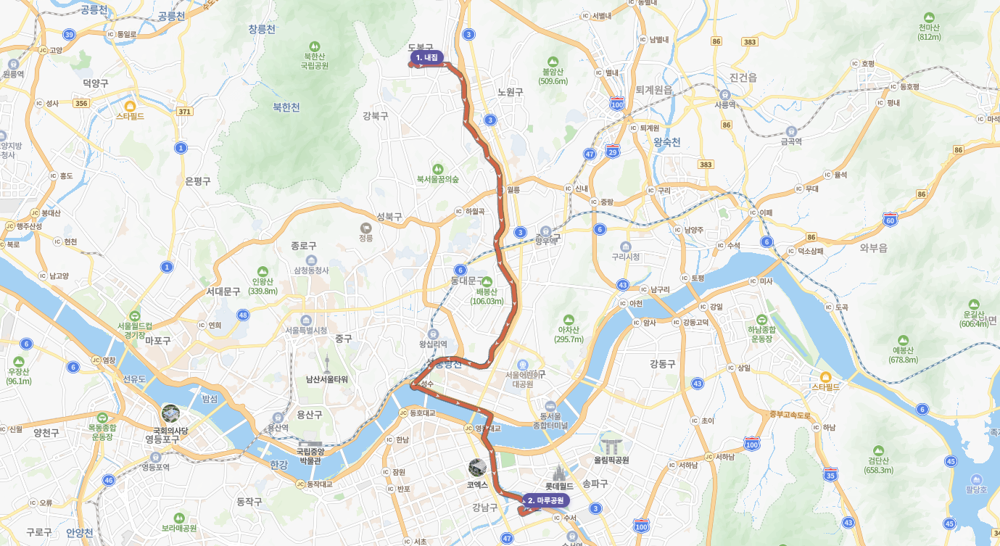

관광지 탐색 · 드래그앤드롭 일정 · 이동시간 자동 계산 · 실시간 협업 · 커뮤니티 공유
TEAM
전진 · 송정기
PERIOD
2026.05 — 2026.06 (약 6주)
DOCUMENT
관통 프로젝트 최종 보고서
목차
01기획 배경 · 목표
06적용 패턴 및 핵심 알고리즘
02시장 분석 (경쟁 · 차별화)
07기대 효과 · 개발 후기
03개발 결과 (핵심 기술 · 구현)
附부록 — AI 보고서 · ERD · API 명세
04개발 환경 & 시스템 구조
附부록 — AI 보고서 · ERD · API 명세
05시연
01
기획 배경 · 목표
여러 서비스를 오가는 여행 계획의 피로를 한 화면으로 통합한다 — 문제 인식부터 핵심 가치, 차별화 기능, 목표 사용자까지.
문제 인식 — 흩어진 여행 계획
국내 여행을 계획할 때 사용자는 최소 4~5개의 서로 다른 서비스를 동시에 열어두고 작업한다. 가고 싶은 곳은 포털 지도로 검색하고, 운영시간·예약은 개별 사이트에서 확인하며, 이동수단과 소요시간은 대중교통 앱으로 따로 계산하고, 숙소는 예약 플랫폼에서 비교한다. 일행이 있다면 메신저·메모를 오가며 맞춰야 한다.
포털 지도
+
예약 사이트
+
대중교통 앱
+
숙소 플랫폼
+
메신저 · 메모
결국 "여행 계획을 세우는 일" 자체가 피로한 작업이 되고, 공들여 짠 일정도 현장에서 이동 시간이 어긋나면 전체 흐름이 무너진다.
핵심 불편함 — 네 가지 문제
정보의 분산
관광지·이동·숙소 정보가 서로 다른 서비스에 흩어져 통합된 뷰가 없음
수동 이동시간 계산
장소가 바뀔 때마다 이동 시간을 직접 검색해 수기로 반영해야 함
일정의 경직성
시간·장소를 옮겨도 동선을 자동 재배치·재계산해 주는 도구 부재
협업의 불편함
범용 도구는 여행 일정 특유의 시간·장소 구조와 실시간 논의에 부적합
목표 — "한 화면에서 끝나는 여행 일정 도구"
탐색 → 후보군 등록 → 드래그앤드롭 일정 확정 → 구간 이동시간 자동 계산 → 커뮤니티 공유를 끊김 없는 한 흐름으로 제공하고, 일행과는 실시간으로 함께 편집한다.
INTEGRATION
통합
탐색–후보군–타임라인–공유를 한 플로우로
AUTOMATION
자동화
도시 분류·이동시간·경로 연동이 자동 처리
FLEXIBILITY
유연성
후보군 먼저 모으고 날짜·시간은 나중에 정하는 2단계 계획
COLLABORATION
협업
여행 일정 특화 UI로 일행과 실시간 공동 편집
추가 · 차별화 기능
01
실시간 공동 편집
WebSocket(STOMP) 동시 편집 + 낙관적 락 동시성 제어 + 상대 커서 표시
02
멀티모달 이동시간
ODsay(대중교통) + T Map(자동차·도보·택시요금)을 구간별 모드 선택으로, 경로를 지도에 폴리라인 시각화
03
관광지 AI 챗봇
Spring AI 기반 컨텍스트 Q&A + 반경 3km 주변 추천, 멀티턴 대화
04
공유 링크 · 커뮤니티
VIEW·EDIT 권한 공유 링크, 완성 일정의 게시판 공유, 방문 지도로 기록 자산화
목표 사용자
🧭
자유여행 선호자
국내 여행지를 직접 조사하고 동선을 설계하는 여행자
👥
소그룹 여행자
2인 이상이 함께 일정을 맞추며 계획하는 여행자
🗺️
동선 우선 여행자
촘촘함보다 유연함을 선호하되 기본 동선은 미리 잡아두고 싶은 여행자
02
시장 분석
기존 서비스는 "탐색"이나 "길찾기"는 잘하지만, 여러 장소를 동선으로 엮고 이동시간을 자동 반영하며 함께 편집하는 흐름은 비어 있다.
경쟁 서비스 비교
항목
네이버 여행
구글 지도
트리플
TripCraft
관광지 탐색
◯
◯
◯
◯
드래그앤드롭 일정
△
✕
△
◎
구간 이동시간 자동
✕
◯
△
◎
이동수단 구간별 선택
✕
△
✕
◎
실시간 공동 편집
✕
✕
✕
◎
AI 관광 챗봇
✕
✕
△
◎
일정 커뮤니티 공유
△
✕
◯
◯
◎ 강점 · ◯ 지원 · △ 부분 · ✕ 미지원 | 핵심 공백 = 드래그앤드롭 일정 + 구간별 이동수단 + 실시간 공동 편집
차별화 전략 — 다섯 축
01
통합 동선 설계— 탐색·후보군·타임라인을 한 화면(작업실)에서 끊김 없이 이어 붙여 서비스 간 전환 비용 제거
02
현실적 이동시간— ODsay + T Map을 구간별 모드 선택으로 반영해 일정이 실제 동선과 맞물리게
03
협업 우선— 공유 링크(VIEW/EDIT) + 실시간 동시 편집(낙관적 락·상대 커서), 경쟁사 미제공 영역을 핵심 차별점으로
04
AI 도우미— 관광지 컨텍스트 Q&A + 반경 3km 주변 추천으로 탐색–결정 사이 정보 탐색 비용 절감
05
기록의 자산화— 완성한 여행을 커뮤니티 공유와 방문 지도로 시각화해 재방문·재사용 가능한 기록으로
④ in-memory localPathCache — 보강용 findLocalPath, 같은 역 중복 제거, 2000개 상한
빈 응답은 저장하지 않는다 → 영구히 빈 채로 굳지 않고 다음에 재시도
지도 폴리라인 시각화
·좌표계 변환 — 저장 [lng,lat] ↔ Naver LatLng(lat,lng)
·구간별 색 — 지하철 호선 공식색, 버스 종류색, KTX 검정, 도보 점선 (검정 casing 위 색선)
·오버레이 — 방향 화살표 ~30px 간격, 역 마커·노선 라벨(7단 오프셋 충돌 회피)
·3단 폴백 — loadLane 실폴리라인 → 정류장 좌표 → 양끝 직선
대중교통 — 구간별 색 폴리라인

자동차 — T Map 경로

드래그 타임라인 — 스냅 · 순서 · 방어
30분 스냅 배치
후보군 → Day 그리드 드롭으로 trip_block 생성, 체류시간 핸들로 30분 단위 스냅, 같은 장소 중복 방문 허용
삭제존 · 순서
사이드바로 드래그하면 빨간 삭제존으로 전환, display_order로 날짜 내 순서 관리
DB TRIGGER 방어
날짜 범위 이탈 블록은 trg_trip_block_date_insert/update 트리거로 차단
자동 저장
배치·이동·삭제 시 자동 저장(debounce), 마우스 업 시점에 서버 반영
실시간 협업 — 두 채널 분리
CHANNEL 1 · 영속
편집 데이터
REST로 쓰고 DB 트랜잭션 + 낙관적 락으로 정합성 보장 → STOMP로 "변경됨" 신호 broadcast (/topic/trip/{id})
vs
CHANNEL 2 · 휘발
presence (커서·참가자)
DB를 안 거치고 서버 in-memory(ConcurrentHashMap)만 사용 → 고빈도(마우스 이동)라 가볍게 (/topic/trip/{id}/presence)
분리 덕분에 "블록 편집은 트랜잭션·락으로 엄격하게, 커서는 빠르고 느슨하게"라는 서로 다른 요구를 각각 최적화.
WebSocket(STOMP) 실시간 적용
왜 WebSocket + STOMP
폴링(지연·낭비)·SSE(단방향)는 잦은 커서 전송에 부적합 → 양방향 WebSocket. STOMP로 /topic pub/sub·/app 매핑, SockJS 폴백
쿠키 인증 · 권한 캐시
핸드셰이크에서 쿠키 검증, CONNECT/SUBSCRIBE/SEND 단계별 권한. 잦은 SEND는 세션 캐시 + TripAccessVersion 세대 카운터로 무효화
순서 · 중복 방어
TripEvent.seq(AtomicLong) 스탬프 → 수신측은 이전 seq 이하면 무시. actorId로 자기 이벤트 무시
트랜잭션 위생
이동시간 재계산(외부 API)은 편집 트랜잭션 afterCommit으로 미뤄 DB 커넥션 점유 방지. 재연결 시 전체 재조회로 수렴
낙관적 락 — 충돌 기준 매트릭스
UPDATE … version=version+1 WHERE id=? AND version=? → 0행이면 409 CONFLICT → 토스트 + 재조회. 핵심 불변식: version은 같은 row에만 작용.
시나리오
메커니즘
결과
같은 블록 동시 이동/리사이즈
version
둘째 409 → 재조회·재시도
드래그 중 블록을 타인이 수정
grab 게이트
즉시 409 ("○○님이 편집 중")
서로 다른 블록을 각자 이동
독립 row·독립 version
충돌 없음 (정상 동시 처리)
transit 재계산 ↔ 사용자 편집
transit 전용 UPDATE(version 불변)
충돌 없음 (오탐 방지)
다른 블록을 같은 시간대에 겹침
trip 행 FOR UPDATE + 겹침 검사
둘째 409 (직렬화)
선택지 비교: 비관적 락(항상 점유, 과함) · 낙관적 락(평소 오버헤드 0, 경합 때만 거부 — 채택) · CRDT/OT(아키텍처 전면 전환, ROI 낮음 + 의미 충돌은 못 없앰).
실시간 커서 — 상대 좌표 동기화
절대 픽셀(clientX/Y)을 그대로 공유하면 "5시 성심당 블록"이 상대 화면에선 엉뚱한 곳에 찍힌다. 커서를 "어느 영역(zone) + 그 zone의 의미 좌표"로 송수신해, 창·스크롤·폭이 달라도 모두가 같은 의미 지점을 가리키게 했다. (픽셀 일치는 비목표 — 의미 단위 정확이 목표)
좌표 모델
zone(timetable/map/other) + dayIndex·colRatioX·contentY. 기준 DOM의 getBoundingClientRect()가 스크롤을 이미 반영
가시 범위 클램프
송신자 위치 기준(격자 밖 숨김) + 수신자 스크롤 기준(뷰포트 밖 숨김)으로 헤더 침범 방지
적응형 throttle
AIMD 송신 throttle + (transition ≤ 수신 간격) 보간으로 드래그 후 백로그를 구조적으로 제거
AI 주변 추천 · 데이터 보존 정책
AI 주변 추천
관광지 좌표 기준 반경 ~3km·최대 8곳을 ST_Distance_Sphere로 거리순 조회 → 시스템 프롬프트 컨텍스트 주입 → gms gpt-4.1 멀티턴 응답에서 실제 언급된 장소만 버튼화 → 지도 핀·상세 이동, 뒤로가기 시 대화·스크롤 복원
데이터 보존 (삭제 전략)
SET NULL — 작성자/일정 삭제 시 게시글·공지 보존("탈퇴한 사용자") RESTRICT — 후보군→블록, 모달 확인 UX 보장 소프트 딜리트 — 글 deleted_at + 북마크 보존
07
기대 효과 · 개발 후기
서비스가 만들어 내는 가치, 그리고 팀이 6주간 얻은 배움.
기대 효과
⏱️
여행 준비 시간 단축— 탐색·동선·이동시간을 한 화면에서, 앱 전환 비용 제거
🧭
현실적인 일정— 구간별 실제 이동시간·수단으로 무리 없는 동선
🤝
함께 만드는 여행— 실시간 협업·공유로 일행과 합의된 일정
📌
경험의 축적— 여행 이야기·방문 지도로 기록을 자산화
📈
확장성— 도메인 중심 설계 + 캐시 전략으로 트래픽·기능 확장 용이
개발 후기
전진 — 개인 회고
웹소캣을 이용한 편집 실시간 적용하는 작업과 서비스의 상황에 맞게 트랜잭션을 고려하고 최적의 트랜잭션을 적용하는 작업, 실시간으로 커서를 트래킹하고 상대 좌표를 동기화하기 위해 송신자의 위치와 수신자의 위치를 모두 고려하는 작업 모두 프로젝트를 진행하면서 처음 경험해본 작업이었습니다. 다양한 오류를 겪었는데 이를 해결하고, 또 예상되는 문제점을 방지하기 위해 다양한 점을 고민하는 등, 기능을 생각나는 대로 구현하는게 아니라 고민하고, 의사결정을 거치면서 꼼꼼히, 체계적으로 구현하는 개발을 시도하려고 많은 노력을 기울였습니다.
어려운 과정이었지만 기술적으로도, 개발하는 태도에서도 많은 것을 배울 수 있었던 관통 프로젝트였던것 같습니다.
열정을 가지고 진행했던 만큼 관통프로젝트 기간이 끝나도 Redis/RabbitMQ를 사용해서 inmemory를 확장해보는 등 계속 개선을 진행하고, 관광지에서 카테고리를 늘려 실생활에 사용해보고 싶습니다.
송정기 — 개인 회고
이번 프로젝트에서 가장 크게 배운 것은 '외부 API를 쓰는 것'과 '외부 API로 제품을 만드는 것'은 전혀 다른 일이라는 점입니다. 처음엔 ODsay·T Map만 호출하면 이동 시간이 나올 줄 알았지만, 도시간 경로는 역과 역 사이만 알려줘 출발지·목적지까지의 접근 구간을 직접 합성해야 했고, 무료 API라 같은 좌표를 짧게 반복 호출하면 빈 응답이 돌아왔습니다. 이를 해결하려 좌표 기반 다층 캐시를 설계하면서, 기능을 '동작하게' 만드는 것과 '제약 안에서 안정적으로' 만드는 것의 차이를 체감했습니다. 관광지 데이터 수집부터 경로 계산·지도 시각화, AI 챗봇까지 한 흐름으로 엮으며 백엔드와 프론트가 어떻게 맞물리는지도 깊게 이해하게 됐습니다.
가장 어려웠던 건 잘 보이지 않는 버그였습니다. 캐시가 없을 때만 간헐적으로 경로가 비는 rate limit 문제는 재현 자체가 까다로워, 같은 좌표를 여러 번 두드려 보고 나서야 원인을 잡을 수 있었습니다. 다음에는 이런 외부 의존 로직에 처음부터 로깅·캐시 적중률 같은 관측 지표를 넣어, 문제를 추측이 아니라 데이터로 확인하고 싶습니다. 또 in-memory로 둔 캐시를 다중 인스턴스에서도 견디도록 DB나 Redis로 승격하는 등, '동작하는 MVP'를 '운영 가능한 서비스'로 끌어올리는 작업을 더 해보고 싶습니다.
기술적 배움 — 외부 API 쿼터 한계를 캐시 설계로 극복 · 실시간 동시 편집의 충돌 처리(낙관적 락) · 도메인 중심 패키지·삭제 전략 설계의 중요성
T
TripCraft
감사합니다
여행을 설계하는 가장 스마트한 방법
전진 · 송정기 | 2026.06
APPENDIX
부록
A. AI 사용 보고서 · B. ER 다이어그램 · C. 클래스 다이어그램 · D. 유스케이스 · E. API 명세
부록 A. AI 사용 보고서
기능별 활용
DB 설계
ERD·스키마 초안 검토, FK 삭제 정책 트레이드오프, 마이그레이션 SQL
백엔드
매퍼·DTO·Service 보일러플레이트, 외부 API 클라이언트 연동
이동시간 캐시
좌표 캐시 키·모드별 캐시 리뷰, 정밀도 단계 정리
프론트엔드
드래그·모달·에디터 스캐폴딩, Pinia, 라우터 가드
실시간 협업
STOMP 구독/발행 구조, 낙관적 락 충돌 설계 논의
문서화
요구사항·WBS·Mermaid·발표자료 초안, 코드 기준 정합성 점검
원칙
AI 산출물은 반드시 사람이 리뷰·검증 후 반영(빌드·테스트 통과) · 보안/권한은 서버 검증 직접 점검 · 키는 환경변수 분리 · 설계 결정은 팀 합의 후 구현 위임
효과
반복 작업 가속 · 설계 트레이드오프 비교·문서화 · 대규모 코드베이스 탐색 효율 · 코드 기준 문서 정합성
한계 & 대응
외부 API 스키마 불확실 → 실호출 검증 · 그럴듯하나 틀린 코드 → 빌드·테스트·코드리뷰 게이트 필수 · 보안 민감 로직 직접 검증
부록 B. ER 다이어그램 — MySQL 8.0 · FK 삭제 정책 표기
FK 삭제 정책
CASCADE — 회원 종속 데이터(token·favorite·trip·place·collaborator)